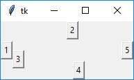

Лекция 1. Графический интерфейс на Tkinter¶
Консольные программы мы уже писать умеем. Время познакомиться с GUI (Graphical User Interface) — пользовательскими интерфейсами с окнами, кнопками, полями ввода, меню.
Для Python есть несколько способов делать GUI:
| Библиотека | Особенности |
|---|---|
| Tkinter | Встроенная в стандартную поставку Python обёртка над tcl/tk. Минимальный набор виджетов, кроссплатформенная. Идеально для первых упражнений и небольших утилит. |
| PyQt6 / PySide6 | Привязки к C++ фреймворку Qt. Полноценная экосистема: визуальный дизайнер, темы, виджеты, мультимедиа, БД. Промышленный стандарт. |
| CEF Python / pywebview | Встроенный браузер на базе Chromium. Дизайн интерфейса на HTML/CSS/JS — удобно для информационных киосков и SaaS-десктопа. |
| Kivy / Flet | Современные кроссплатформенные UI (включая мобильные). |
Эту тему мы откроем с Tkinter — потому что он встроен в Python, и его достаточно, чтобы разобраться с базовыми понятиями: виджет, родитель, упаковщик, событие.
В мире Go устойчивых GUI-библиотек существенно меньше — самые живые проекты — Fyne и gioui.org; для desktop-приложений в Go-сообществе чаще выбирают wails (Chromium-обёртка) или Electron на Node.js — об этом подходе будет лекция 3.
Что такое Tkinter¶
Tkinter (от tk interface) — это привязка Python к графическому инструментарию tcl/tk. Он:
- кроссплатформенный (Windows, macOS, Linux);
- идёт в стандартной поставке Python — ничего не нужно ставить отдельно;
- использует event loop — цикл обработки событий, в котором живут все виджеты.
Начиная с Python 3 модуль называется
tkinter(с маленькой буквы, по PEP 8). В более старых учебниках можно встретитьTkinter— это устаревшее имя.
Импортируется обычным способом:
В Tkinter графические элементы называются виджетами (от англ. window gadget).
Минимальное приложение¶
Tk — корневой класс приложения. При создании запускается интерпретатор tcl/tk и появляется главное окно.
import tkinter as tk
root = tk.Tk()
root.title("Привет, Tkinter")
root.geometry("400x300")
root.mainloop()
mainloop() запускает цикл обработки событий. Пока он работает — окно отображается; следующие строки Python-кода не выполняются.
Общее у всех виджетов¶
Виджеты создаются конструктором соответствующего класса. Первый аргумент (обычно неименованный) — родительский виджет. Если не указан — берётся главное окно.
import tkinter as tk
def on_click() -> None:
print("Клик!")
root = tk.Tk()
btn = tk.Button(root, text="Кликни меня", bg="red", command=on_click)
btn.pack()
root.mainloop()
Часто используемые параметры конструктора:
| Параметр | Что задаёт |
|---|---|
text |
Подпись на виджете. |
bg / background |
Цвет фона. |
fg / foreground |
Цвет текста. |
font |
Шрифт и размер. |
command |
Функция-обработчик активации (для кнопок и подобных). |
width, height |
Размер. |
Изменение конфигурации после создания¶
btn["text"] = "Новый текст"
btn.configure(bg="green", command=other_callback)
print(btn["bg"]) # cget через []
Основные виджеты¶
| Виджет | Назначение |
|---|---|
tk.Toplevel |
Окно верхнего уровня (для многооконных приложений и диалогов). |
tk.Frame |
Контейнер для группировки других виджетов. |
tk.Label |
Статическая подпись. |
tk.Button |
Кнопка. |
tk.Entry |
Одна строка ввода. |
tk.Text |
Многострочный редактор. |
tk.Listbox |
Список с выбором одного или нескольких пунктов. |
tk.Checkbutton |
Флажок. |
tk.Radiobutton |
Радио-кнопка. |
tk.Scale |
Ползунок. |
tk.Scrollbar |
Полоса прокрутки. |
Пример: окно с парой виджетов¶
import tkinter as tk
root = tk.Tk()
root.title("Учебка")
tk.Label(root, text="Ваше имя:").pack(pady=4)
name_var = tk.StringVar(value="мир")
tk.Entry(root, textvariable=name_var).pack(pady=4)
def greet() -> None:
tk.Label(root, text=f"Привет, {name_var.get()}!").pack()
tk.Button(root, text="Поприветствовать", command=greet).pack(pady=8)
root.mainloop()
StringVar (а ещё IntVar, DoubleVar, BooleanVar) — обёртки, к которым можно «привязывать» виджеты: изменили значение — автоматически обновляется виджет, и наоборот.
Упаковщики (менеджеры геометрии)¶
Размещение виджетов в окне делается менеджером геометрии. В одном родительском виджете нельзя смешивать менеджеры — выберите один:
| Менеджер | Когда применять |
|---|---|
pack |
Простые ряды/колонки; самый лаконичный, но наименее предсказуемый. |
grid |
Таблица из строк и столбцов — лучший выбор для большинства форм. |
place |
Абсолютные или относительные координаты. Полный контроль и полная ответственность. |
pack¶
btn1 = tk.Button(root, text="1"); btn1.pack(side="left")
btn2 = tk.Button(root, text="2"); btn2.pack(side="top")
btn3 = tk.Button(root, text="3"); btn3.pack(side="left")
btn4 = tk.Button(root, text="4"); btn4.pack(side="bottom")
btn5 = tk.Button(root, text="5"); btn5.pack(side="right")

Параметры:
side—"left"/"right"/"top"/"bottom";fill—"x"/"y"/"both"— расширять ли виджет вдоль оси;expand—True/False— занимать ли всё доступное пространство;padx/pady— внешние отступы.
grid¶
tk.Label(root, text="Имя:").grid(row=0, column=0, sticky="e")
tk.Entry(root).grid(row=0, column=1, sticky="ew")
tk.Label(root, text="Фамилия:").grid(row=1, column=0, sticky="e")
tk.Entry(root).grid(row=1, column=1, sticky="ew")
tk.Button(root, text="Сохранить").grid(row=2, column=0, columnspan=2, pady=8)
root.columnconfigure(1, weight=1)
Ключевые параметры:
row,column— координаты ячейки.rowspan,columnspan— растягивание на несколько ячеек.sticky— направления, к которым «приклеивать» виджет (n,s,e,w, или их комбинация).padx,pady— внешние отступы.columnconfigure(idx, weight=…)/rowconfigure— как столбец/строка реагирует на изменение размеров окна.
grid гораздо удобнее для форм, чем pack.
place¶
Применяется редко — обычно для всплывающих элементов и нестандартных интерфейсов.
Привязка событий¶
Через command у виджета¶
Самый простой способ — для кнопок, чекбоксов, скейлов:
Через bind¶
bind универсальнее — позволяет реагировать на любые события (нажатия клавиш, движения мыши, изменение размеров окна):
def on_key(event):
print("Нажата клавиша:", event.keysym)
root.bind("<Key>", on_key)
root.bind("<Button-1>", lambda e: print(f"клик в ({e.x},{e.y})"))
root.bind("<Control-q>", lambda e: root.quit())
В колбэк передаётся объект Event с атрибутами x, y, keysym, widget, time и т.д.
Типичные имена событий:
<Button-1>/<Button-2>/<Button-3>— клик левой / средней / правой кнопкой мыши;<Double-Button-1>— двойной клик;<KeyPress>,<KeyRelease>— нажатие/отпускание клавиши;<Motion>— движение мыши;<Configure>— изменение размера/положения окна;<Control-q>,<Alt-F4>— комбинации с модификаторами.
Таймеры и периодические задачи¶
В Tkinter нельзя писать while True: ... внутри mainloop — окно «зависнет». Для отложенных и периодических действий используют after:
def tick() -> None:
label["text"] = time.strftime("%H:%M:%S")
label.after(1000, tick) # перепланируем через 1 секунду
label = tk.Label(root, font="Helvetica 24")
label.pack()
label.after(0, tick)
after(ms, fn) ставит задачу в очередь событий — она выполнится после указанного интервала, не блокируя UI.
Изображения¶
Tkinter в стандартной поставке умеет PNG и GIF. Для JPEG/WebP/масштабирования — устанавливают Pillow:
from PIL import Image, ImageTk
src = Image.open("photo.jpg").resize((200, 150))
img = ImageTk.PhotoImage(src)
tk.Label(root, image=img).pack()
Внимание: Tkinter не удерживает ссылку на изображение сам — если переменная
imgуйдёт из области видимости, картинка пропадёт. Храните её как поле объекта или глобальную переменную.
ttk — тематические виджеты¶
tkinter.ttk — расширение со «стилизованными» виджетами, которые лучше выглядят на современных ОС. Часть виджетов дублирует tk (Button, Entry, Label, Frame, Checkbutton, Radiobutton, Scale, Scrollbar), есть и новые: Combobox, Notebook (вкладки), Progressbar, Treeview (таблица/дерево), Separator, Sizegrip.
from tkinter import ttk
combo = ttk.Combobox(root, values=["Один", "Два", "Три"])
combo.current(0)
combo.pack()
pb = ttk.Progressbar(root, length=200, mode="indeterminate")
pb.pack()
pb.start(50)
Темы и стили¶
from tkinter import ttk
style = ttk.Style()
print(style.theme_names()) # доступные темы
style.theme_use("clam") # сменить тему
style.configure("Big.TButton", font=("Helvetica", 16), padding=10)
ttk.Button(root, text="Большая", style="Big.TButton").pack()
Когда есть выбор — используйте ttk. Внешний вид современнее, а API почти не отличается.
Структура: ООП-подход¶
Маленькие приложения можно писать «процедурно», но как только виджетов становится больше десятка — заводят класс-наследник tk.Tk или ttk.Frame:
import tkinter as tk
from tkinter import ttk
class App(tk.Tk):
def __init__(self) -> None:
super().__init__()
self.title("Учебка")
self.geometry("400x200")
self._build()
def _build(self) -> None:
self.name = tk.StringVar(value="мир")
ttk.Label(self, text="Имя:").grid(row=0, column=0, sticky="e", padx=4, pady=4)
ttk.Entry(self, textvariable=self.name).grid(row=0, column=1, sticky="ew", padx=4, pady=4)
ttk.Button(self, text="Привет!", command=self._greet).grid(row=1, column=0, columnspan=2, pady=8)
self.result = ttk.Label(self, font=("Helvetica", 14))
self.result.grid(row=2, column=0, columnspan=2)
self.columnconfigure(1, weight=1)
def _greet(self) -> None:
self.result.config(text=f"Привет, {self.name.get()}!")
if __name__ == "__main__":
App().mainloop()
Сравнение с Go (Fyne)¶
Чтобы почувствовать аналогию — тот же «Hello» на Fyne:
package main
import (
"fyne.io/fyne/v2/app"
"fyne.io/fyne/v2/container"
"fyne.io/fyne/v2/widget"
)
func main() {
a := app.New()
w := a.NewWindow("Учебка")
nameEntry := widget.NewEntry()
nameEntry.SetText("мир")
result := widget.NewLabel("")
greet := widget.NewButton("Привет!", func() {
result.SetText("Привет, " + nameEntry.Text + "!")
})
w.SetContent(container.NewVBox(
widget.NewLabel("Имя:"),
nameEntry,
greet,
result,
))
w.ShowAndRun()
}
Идея та же: виджеты, контейнеры, обработчики событий, ShowAndRun ≈ mainloop.
Сравнение Python ↔ Go¶
| Аспект | Python (Tkinter) | Go (Fyne) |
|---|---|---|
| В стандартной библиотеке | да | нет (go get fyne.io/fyne/v2) |
| Цикл событий | root.mainloop() |
app.Run() / window.ShowAndRun() |
| Менеджеры расположения | pack, grid, place |
контейнеры (VBox, HBox, GridLayout, ...) |
| Темы | ttk.Style |
встроенная Light/Dark, кастомизируется через Theme |
| Привязка данных | StringVar/IntVar |
binding.NewString() |
| Визуальный редактор | нет (но Tkinter Designer для Figma) | нет |
Когда Tkinter — лучший выбор¶
- Учебные задачи и прототипы.
- Маленькие утилиты «под себя».
- Когда нельзя ставить зависимости.
Когда уже не лучший — следующая лекция: для реального десктопного приложения берут PyQt6.
Контрольные вопросы¶
- Что такое event loop в Tkinter и почему в нём нельзя писать
while True? - В чём разница между
tk.Tk()иtk.Toplevel()? - Зачем нужны переменные-обёртки
StringVar,IntVar? - Когда применять
pack, когдаgrid, а когдаplace? - Что такое
stickyуgridи зачем нужныcolumnconfigure(... weight=...)? - Чем
commandотличается отbind? - Как сделать периодическую задачу без блокировки UI?
- Почему изображение пропадает, если переменная с
PhotoImageвыходит из области видимости? - Чем
ttkотличается от обычногоtkи почему для новых проектов берутttk? - Какие аналоги Tkinter существуют в Go и в чём их главные ограничения?